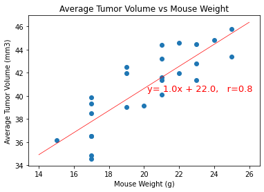
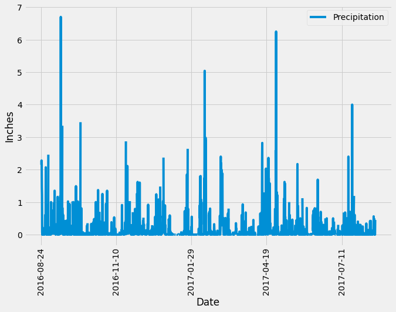
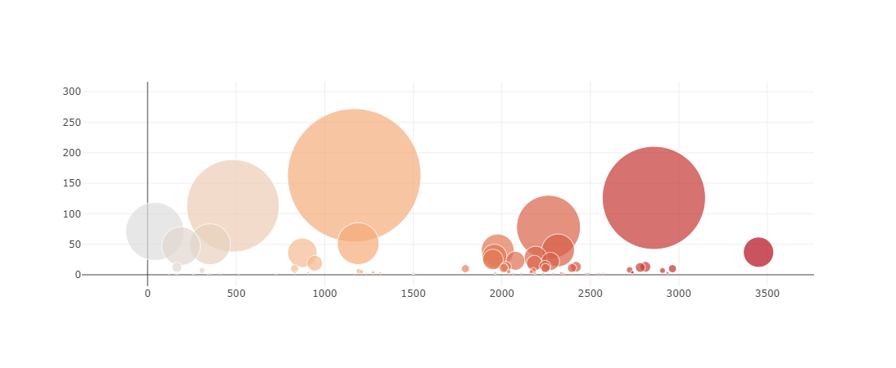

About Me
I'm Nikita
I'm an aspiring data analyst / data engineer. Python and javascript make me happy. Not to mention they're much easier to learn than French.
I like learning new things and meeting new people. Feel free to day hello!
Skills
- Python - Pandas, Jupyter Notebooks, Beautiful Soup, Matplotlib, Flask
- SQL - PostgreSQL, SQLite, SQLAlchemy
- Javascript - D3Js, Plotly, Leaflet
- Web - HTML5, CSS Bootstrap
- Non SQL - Mongo DB, PyMongo
- R - RStudio, Dplyr
- GIT!
- Excel
Pymaceuticals

Tech Used:
Python, Jupyter Notebooks, Matplotlib, Numpy, Scipy
Decription:
Data from an animal trial of tumor drugs, in the form of csvs, were loaded into a jupyter notebooks, explored, cleaned and sorted with pandas. Visualizations were made using Matplotlib. Scipy was used to calculate linear regression
and Numpy was used to scale this and plot it over an existing graph.
Hawaiian Weather
Tech Used:
Python, SQLAlchemy, Matplotlib, Flask, SQLite
Description:
Hawaiian weather data from an SQLite database was converted to a json format and used to create a flask app
A Flask app was buildt
with 5 API routes, inclusing one which accepted a start and end date for sorting through the data.
The SQLite file was also loaded into a jupyter notebook, queried using SQLAlchemy and visualized with Matplotlib
Belly Button Biodiversity
Tech Used:
Javascript, Plotly, Bootstrap, HTML5
Description:
This is a web app used to explore data from a study of belly button microbes stored in JSON format. It allows the user to select a study participant
by their ID in a dropdown populated using D3 to gather the IDs. The JSON file is then filtered according to ser selection and results are plotted on three plotly graphs.
Education
Data Analytics Boot Camp
University of Toronto School of Continuing Studies
September 2020 - March 2021
Bachelor of Medicine Bachelor of Surgery (MBBS)
University of Guyana School of Medicine
September 2010 to November 2015
Work Experience
Digital Marketing Consultant
ceraTECH
August 2020 to Present
- Web design
- Data entry (Excel and SQL)
- Business Insight reports
- Social media marketing
Medical Intern
Georgetown Public Hospital Corporation
February 2017 to March 2018
Research Duties
- Conducted a retrospective cohort study in an outpatient department
- Wrote and submitted proposal to the Ethical
Committee within the Ministry of Health for approval
- Conducted data collection, cleaning and analysis
- Presented findings in front of a committee and colleagues
Clinical Duties
- History taking, physical examination
and documentation of inpatients and outpatients
- Ordering and documenting lab tests and results
- Assisting in creating and updating management plans as part of a medical team
- Performing or assisting in diagnostic and
therapeutic procedures